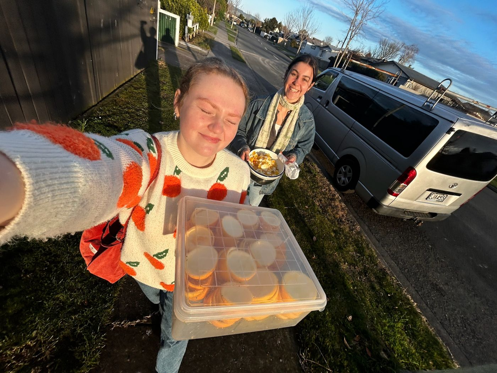
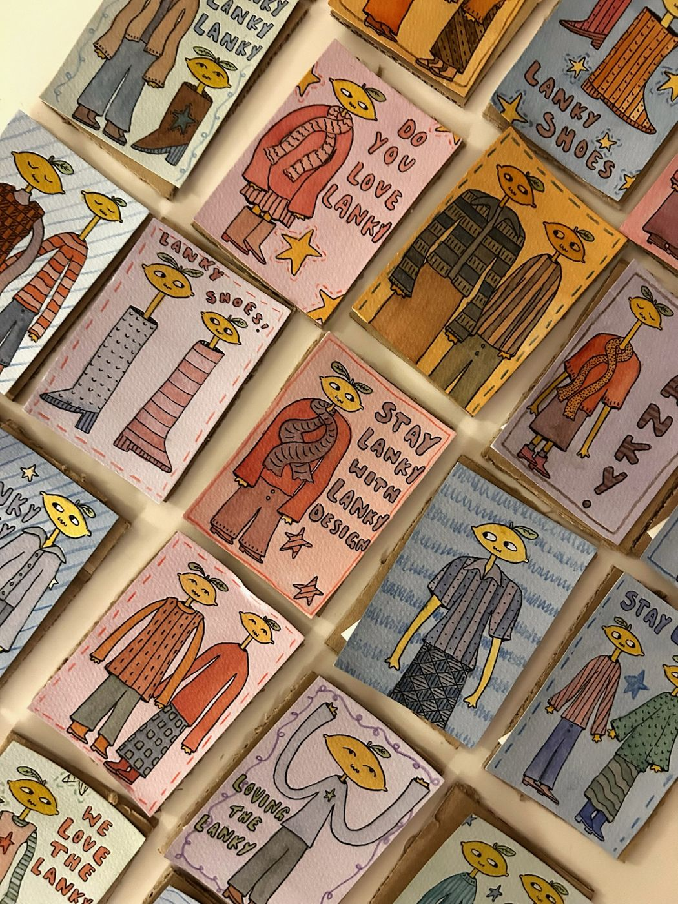
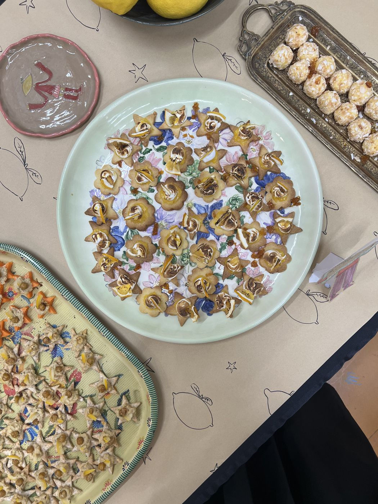
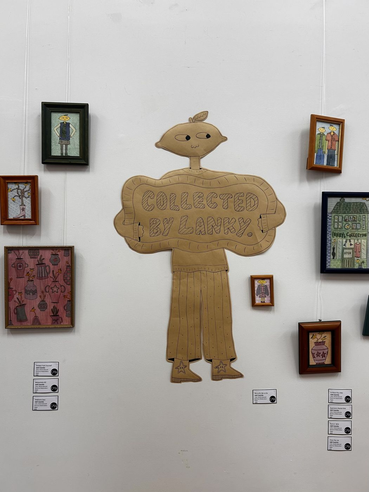
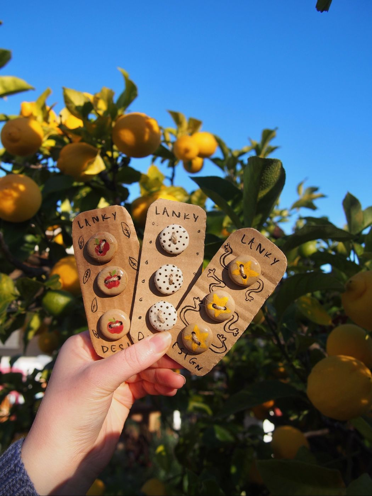
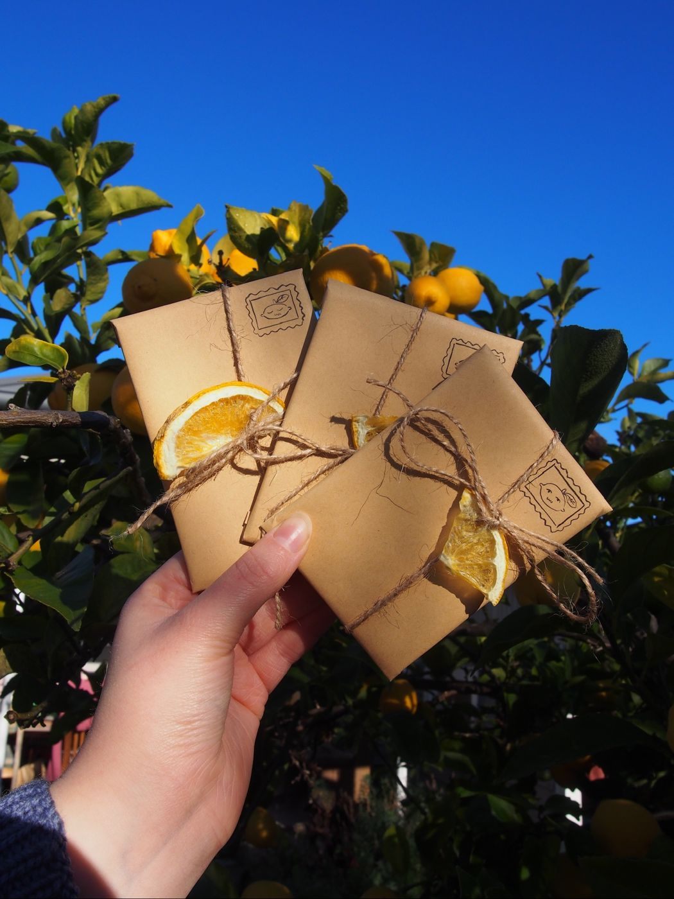
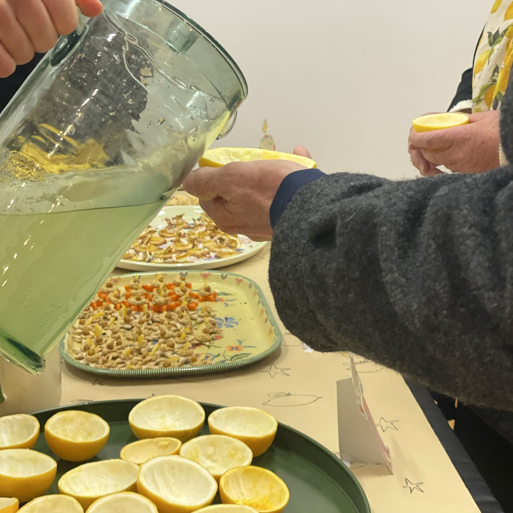

Collected By Lanky.
WHY
After many winter walks desperate for sunshine there was one thing that always shone bright... the lemons adorning our neighbourhood trees. A brightness amongst the grey we wanted our community to appreciate.
Simultaneously Jodi jumped on an opportunity to have her first solo exhibit at Creative Arts Napier.
Collected by Lanky was born.

What
Collected by Lanky was an exhibit of Jodi's multi disciplinary work centered on Lemons.

The Future.
This exhibit brought what were once doodles in Maths class to the community. It was incredibly satisfying to see the way visitors connected with the personality of Jodi's work.
The success of this exhibit was proof we were ready to do it all again, Fig n' Fennel was born and the journey began.

July 2025.

Framed prints.
Jodi's characters representing the wild and wonderful lemons of our neighbourhoods were framed in wee prints being sure to bring joy to homes.

Ceramic Buttons.
Offering people an easy fix to brighten items they already own, Lanky buttons ignited creativity from visitors and continue to be popular.

Lanky Lucky Dip.
Reminiscent of childhood lucky dips Jodi created mini one of a kind prints all wrapped in surprise. This gave visitors something small to remember their visit to the world of Lanky.

Lemon Treats.
An exhibit wouldn't be complete without treats. Esta created a menu of zero waste lemon loaded goods and debuted our trademark lemon cups full of lemonade.